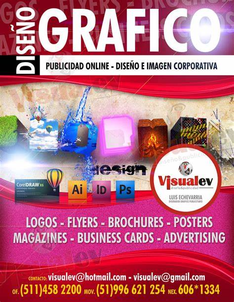

photoGraf.info es un medio dedicado en exclusiva al mundo del diseño,
y en especial al ámbito del diseño gráfico, la creatividad y la cultura visual.
Nuestra vocación es crear un espacio donde los profesionales tengan un punto de información y referencia de lo que acontece en su sector.
Así mismo, nuestro interés es crear una plataforma que genere actividades complementarias, tanto en el ámbito de la información y divulgación,
como en el ámbito de la formación, para ayudar a los profesionales a mejorar y reforzar su actividad.
Nosotros y nuestros socios hacemos el siguiente tratamiento de datos:
Almacenamiento y acceso a información de geolocalización con propósitos de publicidad dirigida,
Almacenamiento y acceso a información de geolocalización para realizar estudios de mercado,
Almacenar la información en un dispositivo y/o acceder a ella ,
Datos de localización geográfica precisa e identificación
mediante análisis de dispositivos , Publicidad y contenido personalizados,
medición de publicidad y contenido,
investigación de audiencia y desarrollo de servicios
Equipo
Nuestro equipo está compuesto por perfiles multidisciplinares que van desde periodistas, diseñadores, multimedia, marketing,
publicidad… Una redacción dinámica y experta que es nuestro gran motor.
Además contamos con colaboradores repartidos por el mundo que son nuestros ojos
tanto en sus destinos como en sus secciones.
Jossh masquin
.jpg) Andruh merchz
Michel bronf
Andruh merchz
Michel bronf
Nuestros Equipo son profesional que se dedica a expresar ideas,
pensamientos o emociones, a través del lenguaje gráfico, es decir, la combinación de imágenes,
dibujos y tipografías. Cada diseñador tiene un estilo único de expresarse,
y son capaces de dar rienda suelta a la imaginación y
creatividad en cada uno de sus trabajos.
publicidad
Gràffica es la web líder dedicada al diseño gráfico y la cultura visual en español
siendo una de las webs más leídas en el mundo y especialmente en España y Latinoamérica
(México, Colombia, Argentina y Perú principalmente)
Una audiencia de más de 400.000 lectores que vienen cada mes para informarse,
mejorar sus conocimientos profesionales
y utilizar parte su tiempo de ocio y lectura en nuestros contenidos.

Nosotros y nuestros socios hacemos el siguiente tratamiento de datos:
Almacenamiento y acceso a información de geolocalización con propósitos de publicidad dirigida,
Almacenamiento y acceso a información de geolocalización para realizar estudios de mercado,
Almacenar la información en un dispositivo y/o acceder a ella ,
Datos de localización geográfica precisa e identificación
mediante análisis de dispositivos , Publicidad y contenido personalizados,
medición de publicidad y contenido,
investigación de audiencia y desarrollo de servicios